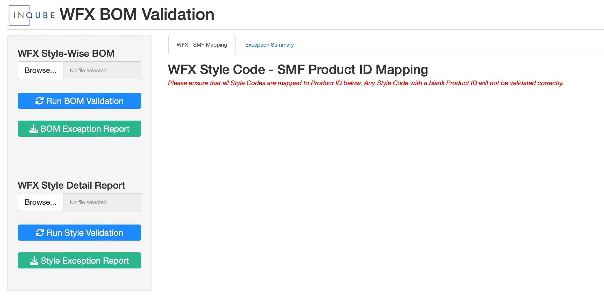

12 WFX BOM Validation
WFX BOM Validation is a companion application to the Style Master File application.
The purpose of this application is to provide a functionality to compare the final WFX BOM with the SMF App BOM and show Exceptions, if any.

12.1 BOM Validation
12.1.1 How to Run Validation
To validate the WFX BOM against the SMF App BOM, please follow the steps as described below
- Log on to the WFX System and Download the BI report named ‘StyleWiseBOM’ for the relevant Style Code(s)
- Log on to the WFX BOM Validation application
- On the ‘WFX Style-Wise BOM’ upload option, upload the WFX excel file as-is
- Please do not modify the WFX downloaded file before uploading
- Once the file has been uploaded, on the ‘WFX - SMF Mapping’ tab, a table will appear showing the mapping between the WFX Style Code and the SMF Product ID
- Check the Style Code - Product ID mapping and correct it if necessary
- Click on the ‘Run BOM’